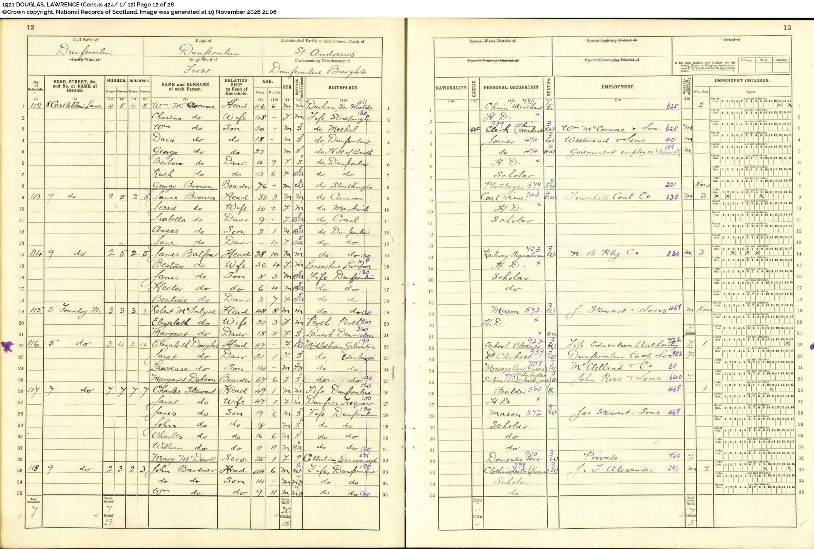

Item 28 · June 19, 1921
1921 census: 5 Foundry Street, Dunfermline
The document

Tap an image to open it full size.
Transcription, word for word
Everything as written, including misspellings. [?] marks an uncertain reading. Struck-through words are marked as struck through. Notes in square brackets describe the page and are not part of it.
[Printed header] 1921 DOUGLAS, LAWRENCE (Census 424/ 1/ 12) Page 12 of 28
[Printed] ©Crown copyright, National Records of Scotland. Image was generated at 19 November 2026 21:06
[Left page, page number 12]
Civil Parish of: Dunfermline. [Parish Ward of — struck through] Burgh of: Dunfermline. Burgh Ward of: First.
Ecclesiastical Parish or Quoad Sacra Parish of: St Andrews. Parliamentary Constituency of: Dunfermline Burghs.
[Columns] No. of Schedule | Road, Street, &c. and No. or Name of House | Houses: Rooms, Persons | Holdings: Rooms, Persons | Name and Surname of each Person | Relationship to Head of Household | Age: Years, Months | Sex | Marriage or Orphanhood | Birthplace
[Clerk's code numbers written beside many entries are given as [code]]
1. Sch. 112, 8 Castleblair Lane, 4, 8, 4, 8. Wm McCormac, Head, 46, 6, M, M, Durham, So. Shields [code]
2. Christina do, Wife, 48, –, F, M, Fife, Strathmiglo [code]
3. Wm do, Son, 20, –, M, S, do, Methil
4. Davie do, do, 18, –, M, S, do, Dunfermline
5. George do, do, 22, –, M, S, do Hill of Beath
6. Barbara do, Daur, 15, 9, F, S, do, Dunfermline
7. Ruth do, do, 13, 6, F, Ba, do do
8. George Brown, Boarder, 76, –, M, W, do Strathmiglo
9. Sch. 113, 9 do, 2, 5, 2, 5. James Brown, Head, 33, 3, M, M, do Cameron
10. Jessie do, Wife, 30, 9, F, M, do Markinch
11. Isabella do, Daur, 9, –, F, Ba, do, Crail
12. Angus do, Son, 2, 1, M, Ba, do Dunfermline
13. Jane do, Daur, –, 4, F, Ba, do do.
14. Sch. 114, 9 do, 2, 5, 2, 5. James Balfour, Head, 38, 10, M, M, do do [code]
15. Beatrice do, Wife, 36, 4, F, M, Lancashire Liverpool [code]
16. James do, Son, 8, 3, M, Ba, Fife Dunfermline [code]
17. Hector do, do, 6, 4, M, Ba, do do
18. Beatrice do, Daur, 3, 7, F, Ba, do do
19. Sch. 115, 5 Foundry St., 3, 3, 3, 3. Robert McIntyre, Head, 48, 8, M, M, do. do [code]
20. Elizabeth do, Wife, 51, 3, F, M, Perth, Perth [code]
21. Margaret do, Daur, 18, 5, F, S, Lanark Denniston [code]
22. Sch. 116, 5 do, 3, 4, 3, 4. Elizabeth Douglas, Head, 47, –, F, W, Midlothian Gilmerton [code]
23. Janet do, Daur, 21, 1, F, S, do, Edinburgh
24. Lawrence do, Son, 14, –, M, FD, do do
25. Margaret Dobson, Boarder, 34, 6, F, S, do. do [code]
26. Sch. 117, 7 do, 7, 7, 7, 7. Charles Stewart, Head, 49, 1, M, M, Fife Dunfermline [code]
27. Janet do, Wife, 47, 1, F, M, Dumfries Troqueer [code]
28. James do, Son, 19, 6, M, S, Fife Dunfermline [code]
29. John do, do, 18, –, M, S, do do
30. Charles do, do, 16, 6, M, S, do do
31. William do, do, 11, 11, M, Ba, do do [code]
32. Mary McDowell, Serv., 25, 1, F, S, Co. Antrim, Lisnevenagh[?] [code]
33. Sch. 118, 9 do, 2, 3, 2, 3. John Bardner[?], Head, 44, 6, M, W, Fife, Dunfermline [code]
34. do do, Son, 14, –, M, FD, do do
35. Wm. do, do, 9, 11, M, FD, do do [code]
Totals: Schedules 7. Houses 7. Rooms 23. Males 20. Females 15.
[Left margin beside line 22: a purple ink blot]
[Right page, page number 12]
[Special Water District of; Special Drainage District of; Special Lighting District of; Special Scavenging District of; Island of — all struck through]
[Box] If the page include any Military (or Air Force), Naval, or Shipping population, a cross ("X") to be entered in appropriate space. Military. Naval. Shipping. [blank]
[Columns] Nationality | Gaelic | Personal Occupation | Status | Employment | National Health Insurance | Dependent Children: Number, Ages (printed grid, Under One to 15)
1. China Merchant [code], E, [code]. Dependent children: 2 [crosses in the age grid]
2. H.D.
3. [A letter struck through] Clerk (China Merchants) [code], W, Wm McCormac & Son [code], M
4. Joiner [code], W, Westwood & Sons [code], M
5. do [code], OW, Government employee (Admiralty) [code], M
6. H.D.
7. Scholar
8. Platelayer [code], Ret., [code], None
9. Coal Miner [code], OW, Townhill Coal Co [code], M. Dependent children: 3 [crosses in the age grid]
10. H.D.
11. Scholar
14. Railway Signalman [code], W, N. B. Rly Co. [code], M. Dependent children: 3 [crosses in the age grid]
15. H.D.
16. Scholar
17. do
19. Mason [code], W, J. Stewart & Sons [code], M. None
20. H.D.
21. [blank], OW, F [a letter struck through]
22. School Cleaner [code], W, Fife Education Authority [code], F. Dependent children: 1 [a cross in the age grid]
23. [A letter struck through] Clerkess [code], W, Dunfermline Coop Soc [code], F
24. Message Boy (Grocer) [code], W, McClelland & Co [code]
25. Saleswoman (Umbrellas & leather goods) [code], W, John Ross & Sons [code], F
26. Builder [code], E, [code]. Dependent children: 1
27. H.D.
28. Mason [code], W, Jas Stewart & Sons [code]
29. Scholar
30. do
31. do
32. Domestic Serv. [code], W, Private [code], F
33. Clothinspector (Cleaners)[?] [code], W, J & J Alexander [code], M. Dependent children: 2 [crosses in the age grid]
34. Scholar
35. do
Totals: G. –. G.&E. –. Insured Males 7. Females 5.